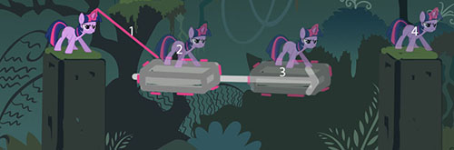
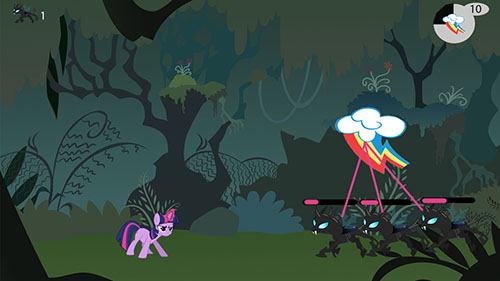

Dans le cadre du cours Mécaniques de jeu, j’ai eu comme mandat de créer 4 mécaniques et 4 systèmes sous la franchise My Little Pony pour un jeu en sidecroller 2D sur la Nintendo Switch.
En plus de pouvoir télécharger le PDF du document au complet, vous vous trouvez un résumé de trois mécaniques ci-dessus.

Mécaniques principales
Activation de plateformes
Cette mécanique consiste à déplacer des plateformes grâce aux pouvoirs magiques de Twilight afin de progresser dans le niveau.
Magie colorante
La magie colorante permet de vaincre l’ennemi. Grâce à la corne magique de Twilight, il est possible de viser les ennemis et de tirer dessus pour qu’ils redeviennent bons.
Cette mécanique vient toucher directement le système intelligent de l'ennemi qui est possible de découvrir dans le document complet.
Nuage d'amitié

Le nuage d’amitié est un nuage de pluie de magie colorante comme l’attaque principale de Twilight. Il est par les amis et peut être utilisé par le joueur lors de la progression.
Pour que cette mécanique puisse fonctionner, il faut nécessairement passer par le système de distribution de nuage qui est possible de découvrir dans le document complet.